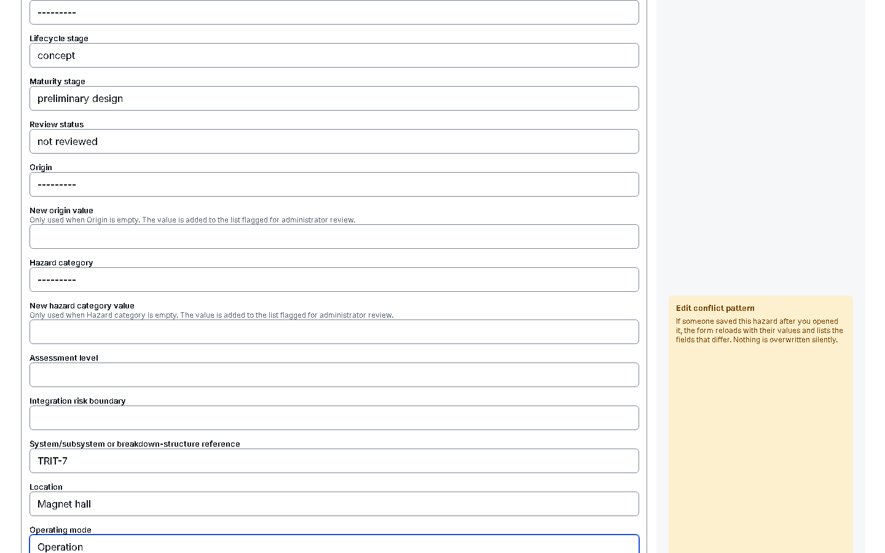

Write a complete hazard
Five rules, then one filled record for feed pump P-101. Skim the rules if you already know the method. Read the record when a box is unclear. Create a hazard walks the clicks.
Five rules
- One event, one record. The title names the thing that fails and what it releases or does. A category such as "pump problems" does not identify an event. Two failures belong in two records.
- The title is the hazard. The description is the situation. The title must stand alone in the register. The description adds the system, the operating mode, and the boundary of this record. Do not copy the title into the description.
- A cause is why the event happens. A consequence is the harm, and how that harm occurs. "The seal wears and leaks" is a cause. "Flammable liquid pools in the pump house and can ignite" is a consequence. "The pump is dangerous" names neither.
- A control is a measure that exists or will exist. Set the type and the criticality, and pick a hierarchy level from the project list. Link a preventive control to the cause. Link a mitigative control to the consequence. Evidence is a type and a document reference for a control you claim is already real. An action is open work that will produce missing evidence. A hope such as "be careful" names no measure.
- Close the chain before you call the record done. You need at least one cause, one consequence, one control, and either evidence or an open action. Score initial risk on the unprotected consequence. Score residual risk only against the controls you named, and mark those controls on the residual assessment. If a named control has no evidence, set further action required.
Weak and strong
| Box | Weak | Strong |
|---|---|---|
| Title | Pump problems | Seal failure on feed pump P-101 releases flammable process liquid |
| Cause | The pump is dangerous | Mechanical seal wears and leaks during normal running |
| Consequence | Someone could get hurt | Flammable liquid pools in the pump house and can ignite, causing burns to anyone in the house |
One filled record
Fill these in order. The create form asks for the hazard first. Causes, consequences, controls, evidence, actions, and risk are separate records after save. Scores come from the project's matrix. This example does not invent a number.
Hazard. On the create form, before you save.
- Title
- Seal failure on feed pump P-101 releases flammable process liquid
- Description
- During normal operation, a mechanical-seal failure on P-101 can release flammable process liquid into the pump house. This record covers that single failure. It does not cover a separate overfill of the feed tank.
- System/subsystem or breakdown-structure reference
- Feed system / P-101
- Location
- Pump house
- Operating mode
- Normal running

-
Cause. Add this after save.
- Text
- Mechanical seal wears and leaks during normal running
-
Consequence.
- Text
- Flammable liquid pools in the pump house and can ignite, causing burns to anyone in the house
-
Preventive control. Link it to that cause.
- Description
- Dual mechanical seal with a leakage alarm
- Type
- Preventive
- Criticality
- High
- Hierarchy level
- engineering controls
-
Evidence. Link it to that preventive control.
- Type
- Test report
- Document reference
- P-101 seal leak-test procedure TP-14, rev C
Leave the procedure in the document. The log stores the reference.
-
Mitigative control. Link it to that consequence.
- Description
- Pump-house gas detection that isolates the feed on alarm
- Type
- Mitigative
- Criticality
- High
- Hierarchy level
- engineering controls
-
Action. Raise it on the mitigative control. That evidence is not in the log yet.
- Title
- Confirm pump-house gas detection isolates the feed
- Status
- Open
-
Initial risk. Judge this on the unprotected consequence.
- Kind
- Initial (unmitigated)
- What you judge
- A pool of flammable liquid that can ignite
-
Residual risk. Score this only against the controls you named.
- Kind
- Residual (mitigated)
- Relies on
- Both controls above
- Further action required
- Yes, until the gas-detection evidence is in the log
Before you stop
- Title names one event and stands alone in the register.
- Description adds the situation and the boundary, and does not repeat the title.
- At least one cause, written as why.
- At least one consequence, written as harm.
- At least one control, typed, with a hierarchy level, linked to the cause or the consequence.
- Evidence on each control you claim is already real, or an open action on the gap.
- Initial risk scored on the unprotected consequence.
- Residual risk relies on the named controls.
- Further action required if any named control lacks evidence.
Guide words for a workshop sit in IEC 61882. The matrix you score against is the project's risk criteria. This page does not replace either document.